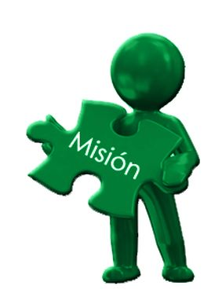

"We bring hope, healing and transformation to individuals and communities in Africa,
through Chaplaincy and Charity work, demonstrating God's love and Compassion."
Our Mission

Save Souls Afrika is committed to providing emotional, spiritual and practical support
to individuals and communities in need through Chaplaincy, Charity and community development
initiatives, empowering them to live fulfilling lives and reach their full potential.
Our Objectives
Provide Chaplaincy services: Offer emotional and spiritual support to individuals in crisis, hospitals and other settings.
Support vulnerable communities: Provide charity work including food, shelter and clothing to vulnerable groups such as orphans, widows and the elderly.
Community development: Implement initiatives such as education, skills training and economic empowerment programmes.
Partnerships and collaborations: Build partnerships with other organisations and stakeholders to increase effectiveness.
Our Core Values
Compassion: Demonstrate God’s love and compassion to individuals and communities in need.
Integrity: Operate with integrity, transparency and accountability.
Empowerment: Empower individuals and communities to reach their full potential.
Respect: Respect the dignity and worth of every individual.
Stewardship: Manage resources wisely and efficiently to maximise impact.
The vision, mission and objectives of Save Souls Afrika serve as the foundation for our work and guide our decision making and strategic planning.